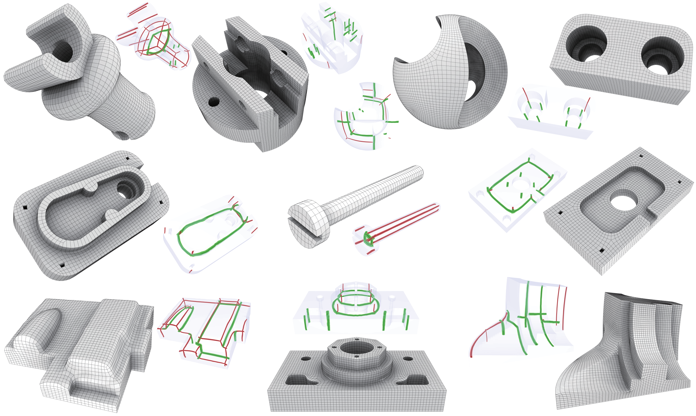

|
Cut-enhanced PolyCube-Maps for Feature-aware All-Hex Meshing
|
|
Haoxiang Guo 12
Xiaohan Liu 23
Dong-Ming Yan 3
Yang Liu 2
1 Tsinghua University 2 Microsoft Research Asia 3 University of Chinese Academy of Sciences ACM Transactions on Graphics (Proceedings of SIGGRAPH 2020) |
|  |
|
Paper [PDF] Appendix [ZIP] Slides [PPTX] Code [Github] Citation [BibTeX] Hao-Xiang Guo, Xiaohan Liu, Dong-Ming Yan, and Yang Liu. 2020. Cut-enhanced PolyCube-Maps for Feature-aware All-Hex Meshing. ACM Trans. Graph. 39, 4, Article 106 (2020), 14 pages. |